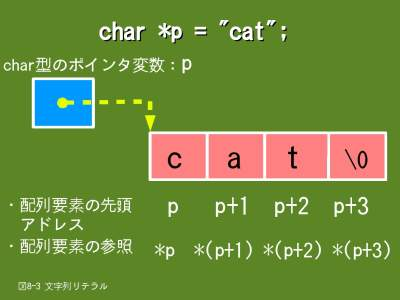
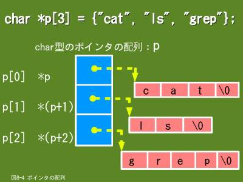
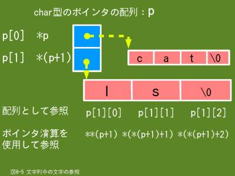

8.5 ポインタによる文字列の操作
- 
- 【図８-３】文字列リテラル
ポインタは配列を取り扱うのに有効な手段です。特に、文字列を取り扱う場合、ポインタを使うと簡潔に記述できます。ここでは文字列を取り扱うのに便利な、文字列リテラルとポインタの配列について説明します。
今までの説明で、文字列をポインタ変数で取り扱いたい場合は、文字列用の配列を宣言して、さらに、ポインタ変数を宣言して、そのポインタ変数に配列の先頭アドレスを設定する、といったような手順になります。つまり、次のような手順です。
char command[] = "cat";
char *p = command;
このような面倒な手続きを文字列リテラルを使えば図8-3のように１行で記述できます。
char *p = "cat";
これにより、"cat"という文字列が自動的に確保されて、指定したポインタ変数に先頭アドレスが設定されます。文字列中の文字の参照はポインタの演算と間接参照演算子（*）で行うことができます。
- 
- 【図８-４】ポインタの配列
複数の文字列を一括して取り扱う場合、２次元配列が使えることは既に説明しました。例えば、３つの文字列を初期値としてもつ２次元配列は次のように宣言します。
char command[][5] = {{"cat"}, {"ls"}, {"grep"}};
これと同じようなことをポインタを使って行うには、図8-4のようにポインタの配列を使います。考え方としては文字列リテラルを配列にしたものと思っていただくとよいでしょう。図8-4では３つの文字列を宣言しています。
char *p[3] = {"cat", "ls", "grep"};
この場合も３つの文字列が自動的に確保されて、指定したポインタの配列にそれぞれの先頭アドレスが設定されます。
２次元配列で文字列を取り扱う場合、列の長さは取り扱う文字列の中で一番長い文字列の文字数になります。従って、短い文字列と長い文字列が混在していると、不要な領域がたくさんできてしまいます。それに対して、ポインタの配列の場合は必要最低限の領域しか確保しませんので、メモリを有効に使うことになります。
8.5.1 形式
ここで説明するのは文字列を扱うための文字列リテラルとポインタの配列ですので、型名はchar型になります。また、ポインタ変数の宣言ですので変数名の前に*を付けます。初期値として指定する文字列にはヌル文字を指定する必要はありません。
※ 文字列リテラル
char *ポインタ変数名 = "文字列";
※ 文字列リテラルの代入（ポインタ変数は宣言済であること）
ポインタ変数名 = "文字列";
※ 文字列用のポインタの配列
char *ポインタ配列名[要素数] = {"文字列１", "文字列２", … , "文字列ｎ"};
char **ポインタ変数名; ← ポインタの配列用変数の宣言です
- *ポインタ変数名
- 通常のポインタ変数と同じ形式です。
- *ポインタ配列名[要素数]
- 文字列の先頭アドレスを格納する配列ですので、配列名の前に*を指定します。そして、配列名の後に[と]で括って要素数を指定します。ただし、初期値を指定した場合は要素数は省略できます。
- **ポインタ変数名
- 配列名は配列の先頭アドレスを値としてもつポインタの定数と考えることができますので、ポインタの配列はポインタのポインタと考えることができます。このことにより、ポインタ変数名の前に*を２個付けることにより、ポインタの配列用のポインタ変数を宣言することができます。
8.5.2 文字列中の文字の参照
- 
- 【図８-５】文字列中の文字の参照
ポインタの配列で宣言した文字列を参照するには先頭アドレスが必要です。先頭アドレスはポインタの配列に設定されていますので、図8-5のポインタの配列pを配列として取り扱う場合は次のようになります。（単純な１次元配列です）
p[0]、p[1]
同じことをポインタを使うと次のようになります。
*pまたは*(p + 0)、*(p + 1)
さらに、ポインタの配列で宣言した文字列中の文字の参照は配列として指定する方法と、ポインタの演算を使う方法があります。
配列として指定する場合はポインタの配列の方を行、文字列の方を列とした２次元配列として取り扱います。例えば、図8-5の文字列"ls"の各文字を配列として参照するには次のように指定します。
p[1][0]、p[1][1]、p[1][2]
同じく、図8-5の文字列"ls"の各文字をポインタの演算を使って参照するには次のような指定になります。
- 文字列"ls"の先頭アドレスはポインタの配列の２番目の要素に設定されていますので、*(p + 1)の値として参照できます。
- 最初の文字'l'のアドレスは文字列"ls"の先頭アドレスと同じですので
*(p + 1)です。このアドレスに設定されている値を参照しますので、間接参照演算子（*）を使って、**(p + 1)のように指定すれば最初の文字'l'を参照できます。
- ２番目の文字's'のアドレスは先頭アドレスに１を加算すれば取得できますので*(p + 1 ) + 1です。このアドレスに設定されている値を参照しますので*(*(p + 1) + 1)のように指定すれば２番目の文字's'を参照できます。
- 同じように、３番目のヌル文字は*(*(p + 1) + 2)のように指定すれば参照できます。
8.5.3 例題
例題１
この例題は配列の説明のときに使ったメートル単位の長さを各種単位の長さに変換表示するもの（ex07_5）をポインタの配列を使って書き換えたものです。ここでは配列名を使っています。
#include <stdio.h>
int main()
{
double coefficient[] = {39.370, /* インチ */
3.280, /* フィート */
1.093, /* ヤード */
3.300, /* 尺 */
33.000}; /* 寸 */
char *unit_name[] = {"インチ",
"フィート",
"ヤード",
"尺",
"寸"};
double length;
int number;
printf("長さの変換を行います\n");
printf("変換する長さを入力してください（単位はメートル） ==> ");
scanf("%lf", &length);
printf("1. %s\n", unit_name[0]);
printf("2. %s\n", unit_name[1]);
printf("3. %s\n", unit_name[2]);
printf("4. %s\n", unit_name[3]);
printf("5. %s\n", unit_name[4]);
printf("変換する単位の番号を入力してください ==> ");
scanf("%d", &number);
if (number >= 1 && number <= 5)
{
printf("%.2fメートルは%.3f%sです\n",
length, /* 入力した値（変換する長さ） */
length * coefficient[number - 1], /* 指定された長さの単位に変換 */
unit_name[number - 1]); /* 変換した長さの単位 */
}
else
{
printf("番号が不当です\n");
}
return 0;
}
$ ./ex08_5.prg
長さの変換を行います
変換する長さを入力してください（単位はメートル） ==> 3
1. インチ
2. フィート
3. ヤード
4. 尺
5. 寸
変換する単位の番号を入力してください ==> 2
3.00メートルは9.840フィートです
$
- 9〜13行目
- ポインタの配列に初期値として長さの単位名を指定します。
- 21〜25行目
- メニューとして、長さの単位名を表示します。文字列の出力ですので、書式は%sで、文字列の先頭アドレスを指定します。
例題２
上記例題と機能は同じですが、こちらはポインタを使っています。
#include <stdio.h>
int main()
{
double coefficient[] = {39.370, /* インチ */
3.280, /* フィート */
1.093, /* ヤード */
3.300, /* 尺 */
33.000}; /* 寸 */
char *unit_name[] = {"インチ",
"フィート",
"ヤード",
"尺",
"寸"};
double length;
int number;
printf("長さの変換を行います\n");
printf("変換する長さを入力してください（単位はメートル） ==> ");
scanf("%lf", &length);
printf("1. %s\n", *unit_name);
printf("2. %s\n", *(unit_name + 1));
printf("3. %s\n", *(unit_name + 2));
printf("4. %s\n", *(unit_name + 3));
printf("5. %s\n", *(unit_name + 4));
printf("変換する単位の番号を入力してください ==> ");
scanf("%d", &number);
if (number >= 1 && number <= 5)
{
printf("%.2fメートルは%.3f%sです\n",
length, /* 入力した値（変換する長さ） */
length * *(coefficient + number - 1), /* 指定された長さの単位に変換 */
*(unit_name + number - 1)); /* 変換した長さの単位 */
}
else
{
printf("番号が不当です\n");
}
return 0;
}
- 21〜25行目
- メニューとして、長さの単位名を表示します。ポインタの演算を使用します。